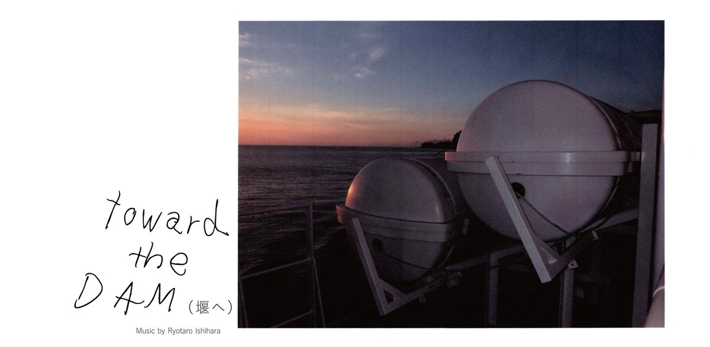
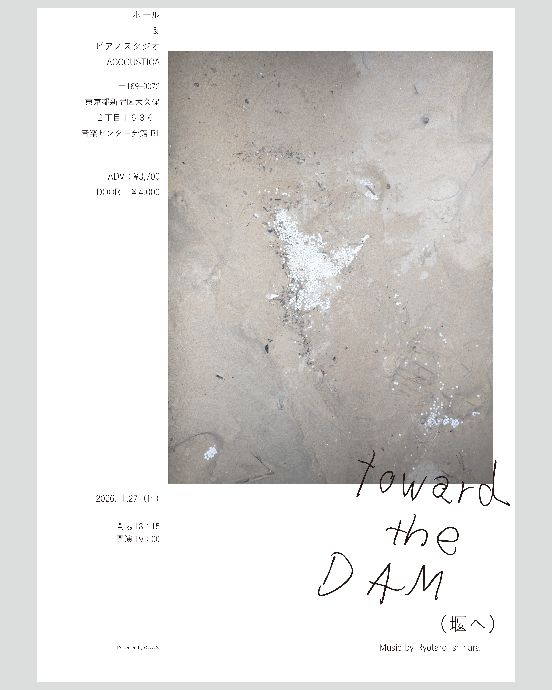
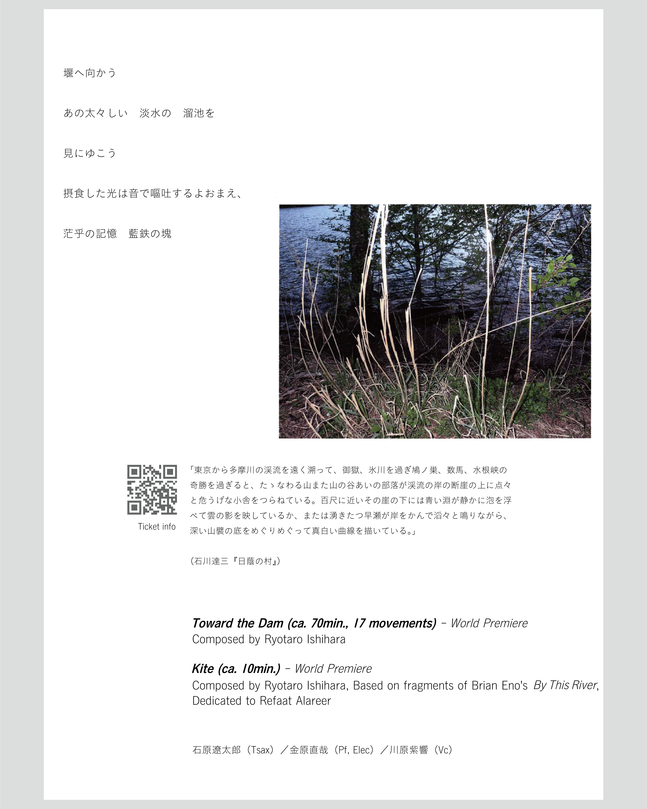
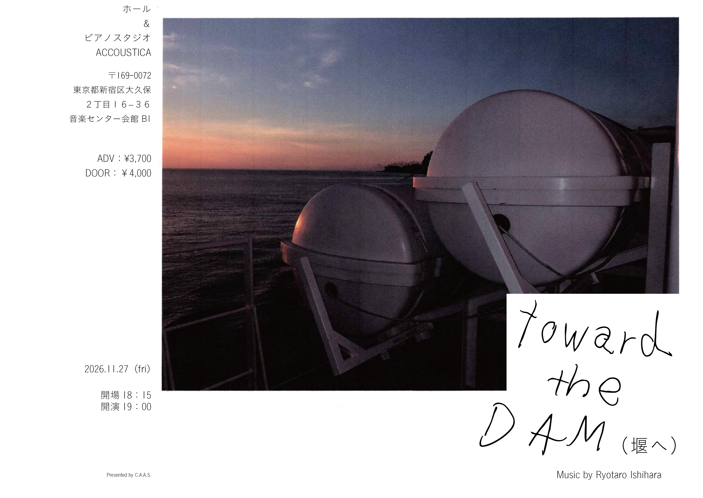
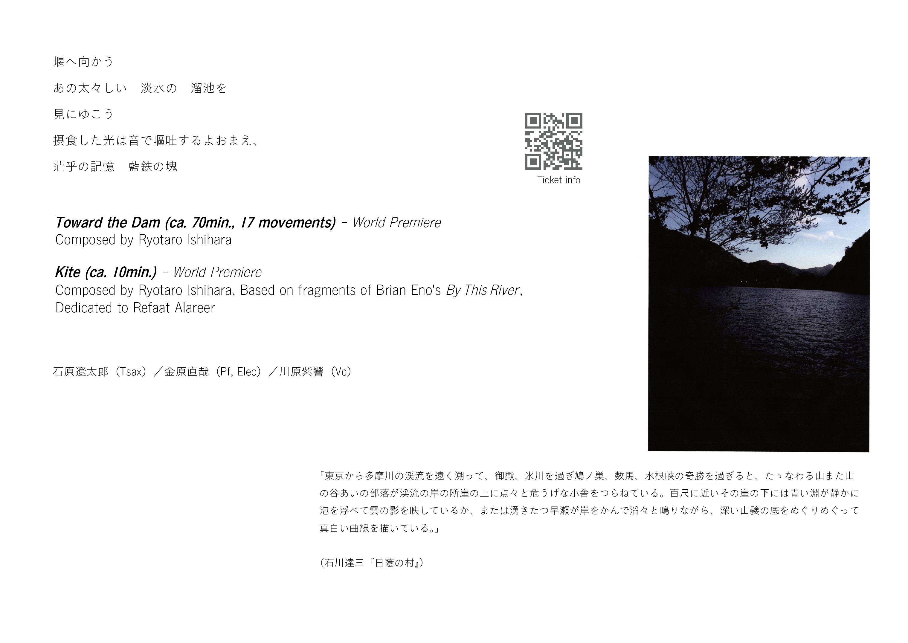

Toward the Dam(堰へ)




「東京から多摩川の渓流を遠く溯って、御嶽、氷川を過ぎ鳩ノ巣、数馬、水根峡の奇勝を過ぎると、たゝなわる山また山の谷あいの部落が渓流の岸の断崖の上に点々と危うげな小舎をつらねている。百尺に近いその崖の下には青い淵が静かに泡を浮べて雲の影を映しているか、または湧きたつ早瀬が岸をかんで滔々と鳴りながら、深い山襞の底をめぐりめぐって真白い曲線を描いている。」
(石川達三『日蔭の村』)
Toward the Dam
Kite